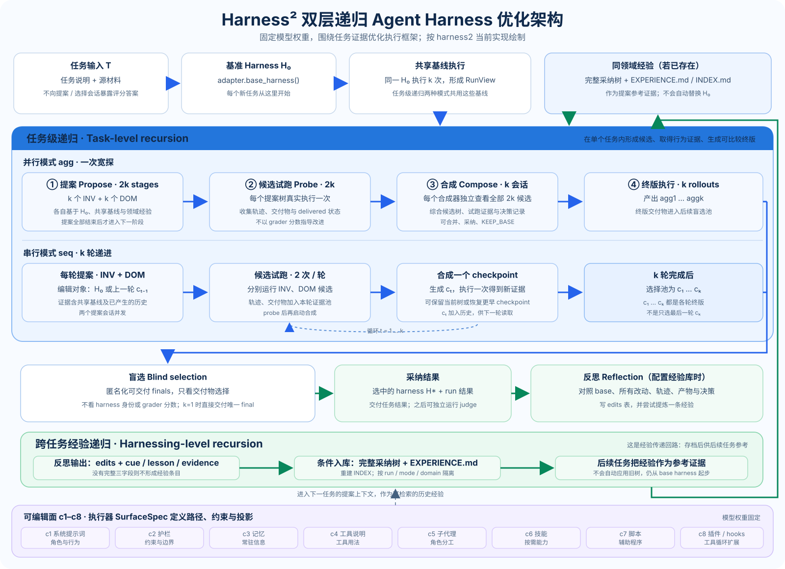

01 · STRUCTURE
系统架构与代码边界
从 CLI 入口到 schedule、recursion、adapter、substrate 和独立 judge/report。
- 方法、基准、执行器、模型通道四个轴
- 调用图、依赖边界、并发位置
面向实现本身的分篇说明：算法怎么走、代码在哪、为什么这样设计、当前边界是什么。
图中区分任务内的并行/串行递归，最终盲选与反思入库，以及经验如何成为后续任务的参考证据。经验库不会自动覆盖新任务的基准 harness。

从 CLI 入口到 schedule、recursion、adapter、substrate 和独立 judge/report。
逐步解释 agg 的宽探和 seq 的 checkpoint 递进。
跟进一次提案从 context.build 到 proposer、harvest、校验和 rollout。
说明 finals-only 候选池、匿名化、experience 字段门槛与跨任务读取。
说明任务 adapter、solver runtime 和模型会话通道的职责边界。
理解目录、namespace、账本、原子 summary 更新和完成标记。
哪些机制减少 grader 泄漏，哪些执行风险仍由运行环境负责。
从预检、dry-run 到 sweep、judge 和 report 的命令和数据检查。
展开 c1–c8 路径映射、SurfaceSpec 白名单、autotrigger 和树校验。